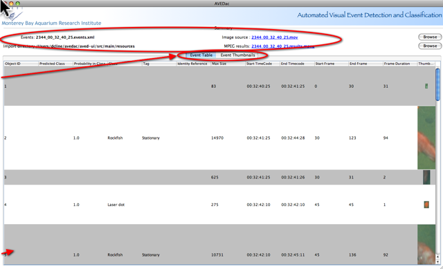

Automated Visual Event Detection and Classification
Overview
The AVEDac user interface is designed to edit a single XML file at a
time.
It has four main components: the
Summary, Event
Table, Event
Thumbnails, and Event
Player
- Summary gives an overview of the files associated with the results and includes links to source and results video clips.
- Event Table and Event Thumbnail views are simply different ways of representing the same data; one is a spreadsheet format, and the other is a grid of thumbnails.These views display a summarized view of the AVED event data.
- Event Player.
In this view you can an event
frame-by-frame. This is useful to see the event in the
context of the entire frame, rather than just a thumbnail. To
open an event editor double-click on any row in the Event
table, or
any thumbnail in the Event thumbnails view.
click
on the video links in the Summary to playout video in an
external player
Click tabbed pane to toggle between Event Table and Event Thumbnail views double-click anywhere in the row to open an Event Player |  |